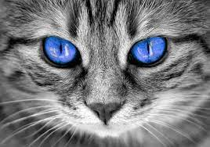

Kucing (Felis catus) adalah hewan peliharaan populer yang terkenal dengan tingkahnya yang menggemaskan dan sifatnya yang mandiri.
Hewan ini memiliki tubuh yang ramping dan fleksibel dengan bulu halus yang beragam warna dan pola.
Ukurannya bervariasi tergantung ras, dengan panjang tubuh rata-rata sekitar 46 cm dan berat 4-5 kg.